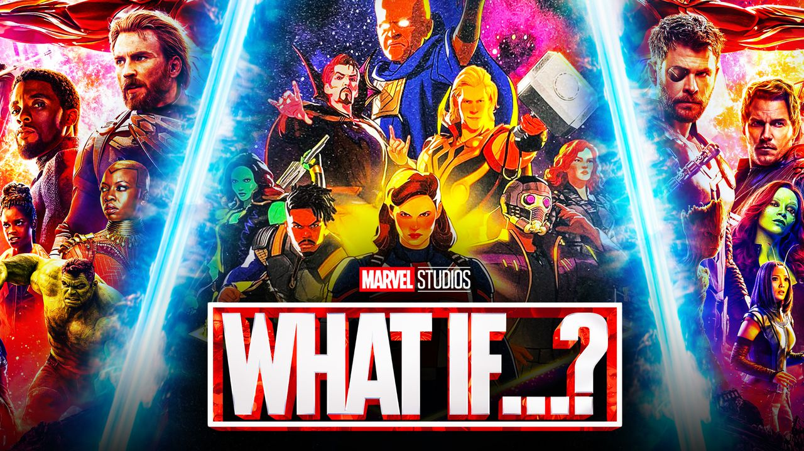

MARVEL!!

After being held captive in an Afghan cave, billionaire engineer Tony Stark creates a unique weaponized suit of armor to fight evil.
After som time, Tony Stark, fixed and developed his suit, down to the last detail using nanotech.
Captain America, also known as Steve Rogers, is a frail young kid from broolklyn, who enhanced to the peak of human perfection by an experimental "super-soldier serum". After his expriment went well, he helped the United States in World War II. Captain Americas primary weapon is his shield, it is made out of the strongest metal on earth (vibranium) and impossible to destroy.

Thor Odinson is the Asgardian God of Thunder, Thor is the son of Odin, the All-Father and king of Asgard.Mjølnir is the iconic hammer of Thor and one of the most identifiable parts of his character. Mjolnir, can only be wielded by those who are considered “worthy”, therefore thre is only a few people that can lift up thor hammer.

Black Widow also known as Natasha Romanoff, were a russian girl who were taken away from her family as a young girl to become a trained assasin and spy.
She were trained in "the red room" with other girls, she managed to escape the torture, and joined the avengers to clean her legder.

The Hulk, also known as Bruce Banner, ia a calm genius scientist with seven phDs. One wrong expriment, where he wanted to create a super-soldier, to make himself big and strong. instead he made his alter ego "Hulk a green, hulking and muscular human-like creature, who appears whenever banner gets angry.


Hawkeye, also knwown aas Clint Barrton, is an expert marksman and fighter. He is especially reallygood at bow an arrow and "never misses a shot" Clint Barton puts his talents to good use by fighting crime.


Earth's most powerful superheroes must unite and learn to fight as a team if they are to succeed in stopping the evil Loki and his army. The avengers had to fight against an alien species called Chitauri, causing in destruction and death. Loki wants to rle erath and brings in his "army" of aliens to fight against the avengers. He has Clint Barton (hawkeye) under mind control.
The second Avengers movie; Tony Stark and Bruce Banner invents 'the Ultron program', which is supposed to protect the earth, but something goes terribly wrong and the system takes over. The Avengers must stand together to stop what they themselves have started, but it is not as easy as they had expected. The Avengers gets help fighting against robots by Vision, Wanda and Pietro Maximoff
All superheroes and their allies must come together and sacrifice everything in an attempt to defeat the mighty Thanos and stop him from destroying the universe. All the different superheroes comes together to collect infinity stones, that will help Thanos eliminate half of the lifte in the universe.
After the catastrophic events Thanos started and which wiped out half the universe and divided the Avengers, the remaining members of the superheroes make a cunning plan to reverse Thanos' evil deeds, and beat him once and for all. It is all about the infinity stones and defeating Thanos and his army.
The Soul Stone has the ability to manipulate the soul, the essence that makes up an individual, and has the ability to resurrect and conjure the spiritual representation of the people who are dead.
As the Infinity Stone that represents and governs over space, the Space Stone grants the wielder absolute control over space itself. It is primarily used to open portals to other locations and can even allow interdimensional travel.

The Power Stone represented the destructive nature of the universe, and is incredibly powerful, capable of annihilating entire planets. The Power Stone was used by the Celestial Eson the Searcher to destroy planets and civilizations.

In Avengers Loki arrives on Earth armed with a Scepter which contains The Mind Stone and was the main power source for the Scepter. The Infinity Stone granted the Scepter such diverse abilities to fire energy projectile blasts, manipulate minds, enable teleportation, perform astral projection and allow mental communication. It has given to powerful superheroes their powers; such as Wanda and Vision

The Reality Stone gives the user the ability to control dark-forces and at full power, manipulate reality. It can also revive the dead. It can even restore lost body parts of its hosts. The Reality Gem can create a vast network of changes to the plane of existence, it's definitely one of the most powerful of the gems in existence.

It had the ability to manipulate time, even in places "beyond" time, such as the Dark Dimension. The Time Stone allows its user total control over the past, present and future. Its most basic ability grants its user visions of possible futures, and the power to stop and rewind time,

Wanda basically has a mental breakdown that results in the death of her husband Vision. Wanda creates an alternate reality where Vision are alive, and they are happily living together. Each episode is filmed as a different decade.


 Click to learn more about WandaVision
Click to learn more about WandaVision
After Captain Americas death, he gives the mantle to Sam wilson (Falcon). Sam is struggling to take up the mantle of Captain America. After declining the mantle, a new captain america comes, and has the wrong intensions. Sam Wilson gets help from Steve Rogers old friend, who also got the super serum. His name i Winter Solider, also known as Bucky.

 Click to learn more about fatws
Click to learn more about fatws
After stealing the Tesseract during the events of Avengers: Endgame (2019), an alternate version of Loki is brought to the mysterious Time Variance Authority (TVA), a bureaucratic organization that exists outside of time and space and monitors the timeline. They give Loki a choice: face being erased from existence due to being a "time variant", or help fix the timeline and stop a greater threat.


 Click to learn more about loki series
Click to learn more about loki series
Following the creation of the multiverse in Loki's first season finale, What If...? explores the various alternate timelines of the multiverse in which major moments from the Marvel Cinematic Universe films occur differently
Assembled is a comprehensive documentary series that chronicles the creation of Marvel Studios' thrilling new shows and theatrical releases. you get behind the scenes footages.